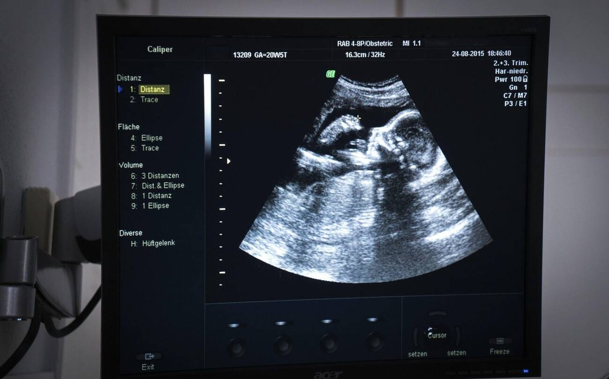

2026-11-09
流感疫苗任何孕期都能打；約第 20 週照解剖超音波；24–28 週驗妊娠糖尿病；27–36 週打百日咳疫苗。每一件都多問一句：為什麼是這個時間？流感疫苗任何孕期都能打；约第 20 周照解剖超声波；24–28 周验妊娠糖尿病；27–36 周打百日咳疫苗。每一件都多问一句：为什么是这个时间？Flu shot any trimester; anatomy ultrasound around week 20; gestational diabetes screening in weeks 24–28; Tdap in weeks 27–36. For each: why this timing?
因為它通常在第 24 週左右才出現：隨著孕期推進，懷孕荷爾蒙和體重增加讓身體細胞對胰島素的反應變差（胰島素阻抗），所以篩檢排在 24–28 週。風險較高的人，醫師可能會提早驗。6
因为它通常在第 24 周左右才出现：随着孕期推进，怀孕激素和体重增加让身体细胞对胰岛素的反应变差（胰岛素抵抗），所以筛查排在 24–28 周。风险较高的人，医师可能会提早验。6
Because it usually appears around week 24. As pregnancy goes on, pregnancy hormones and weight gain make the body's cells respond less well to insulin (insulin resistance), so screening is scheduled for weeks 24–28. People at higher risk may be tested earlier.6
第 13 週左右是第一孕期轉到第二孕期的時候，很多人的噁心和疲倦會開始消退。寶寶在第 12 週約 7.6 公分（3 英吋）長、接近 28 公克（1 盎司），已經會握拳，外生殖器也看得到了。1
第 13 周左右是第一孕期转到第二孕期的时候，很多人的恶心和疲倦会开始消退。宝宝在第 12 周约 7.6 厘米（3 英寸）长、接近 28 克（1 盎司），已经会握拳，外生殖器也看得到了。1
Around week 13 the first trimester gives way to the second, and for many people nausea and fatigue start to ease. At week 12 the baby is about 3 inches (7.6 cm) long and weighs almost an ounce (28 g); it can clench its hand, and the external sex organs are visible.1
因為舊抗體不一定對得上今年的病毒。流感病毒一直在變，疫苗每年依照預期會流行的病毒更新；打疫苗得到的保護也會隨時間下降，所以要每年打。7
因为旧抗体不一定对得上今年的病毒。流感病毒一直在变，疫苗每年依照预期会流行的病毒更新；打疫苗得到的保护也会随时间下降，所以要每年打。7
Old antibodies may not match this year's viruses. Flu viruses keep changing, and the vaccine is updated each year to match the viruses expected to circulate. Protection from vaccination also fades over time, so the shot is yearly.7
因為懷孕讓媽媽自己更容易重症。CDC 說孕婦得流感比較容易變嚴重，可能跟懷孕時免疫、心臟和肺功能的改變有關。8一項研究涵蓋澳洲、加拿大、以色列、美國 6 個流感季、超過 200 萬名孕婦：有打疫苗的孕婦，因流感住院的風險比沒打的平均低 40%。9
因为怀孕让妈妈自己更容易重症。CDC 说孕妇得流感比较容易变严重，可能跟怀孕时免疫、心脏和肺功能的改变有关。8一项研究涵盖澳洲、加拿大、以色列、美国 6 个流感季、超过 200 万名孕妇：有打疫苗的孕妇，因流感住院的风险比没打的平均低 40%。9
Pregnancy makes severe flu more likely for the mother. CDC says pregnant people are more likely to get severely ill from flu, possibly because of changes in immune, heart and lung function during pregnancy.8 In a study of more than 2 million pregnant women across six flu seasons in Australia, Canada, Israel and the U.S., those who got a flu shot had a 40% lower risk of flu hospitalization on average than those who didn't.9
因為寶寶要滿 6 個月才能打流感疫苗。媽媽在懷孕時打，抗體會傳給寶寶。美國一項觀察研究追蹤 3,700 多名未滿 6 個月的嬰兒（2016–2020 年四個流感季）：跟媽媽沒打的寶寶相比，媽媽有打的寶寶因流感住院的風險低約 40%、掛急診低約 20%；未滿 3 個月的寶寶，住院或急診減半。研究觀察到較晚接種與嬰兒較高保護相關，但不代表應刻意延後接種；CDC 建議通常在 10 月底前完成，錯過也可在流感季繼續接種。107
因为宝宝要满 6 个月才能打流感疫苗。妈妈在怀孕时打，抗体会传给宝宝。美国一项观察研究追踪 3,700 多名未满 6 个月的婴儿（2016–2020 年四个流感季）：跟妈妈没打的宝宝相比，妈妈有打的宝宝因流感住院的风险低约 40%、挂急诊低约 20%；未满 3 个月的宝宝，住院或急诊减半。研究观察到较晚接种与婴儿较高保护相关，但不代表应刻意延后接种；CDC 建议通常在 10 月底前完成，错过也可在流感季继续接种。107
Babies can't get a flu shot until 6 months old. When the mother is vaccinated in pregnancy, antibodies pass to the baby. A U.S. observational study of more than 3,700 infants under 6 months (four seasons, 2016–2020) found that, compared with babies whose mothers weren't vaccinated, flu hospitalization risk was about 40% lower and emergency visits about 20% lower; for babies under 3 months, hospitalizations or emergency visits were cut in half. The study observed greater infant protection with later vaccination, but that does not mean a flu shot should be intentionally delayed; CDC generally recommends vaccination by the end of October and continued vaccination if that deadline is missed.107
那為什麼不能打噴鼻式？噴鼻式流感疫苗是「減毒活疫苗」，CDC 明訂懷孕期間禁用。711CDC 沒有寫出噴鼻式禁用的具體原因；它對其他活疫苗（例如麻疹、腮腺炎、德國麻疹三合一 MMR）給的理由是「對胎兒有理論上的風險」。11
那为什么不能打喷鼻式？喷鼻式流感疫苗是“减毒活疫苗”，CDC 明订怀孕期间禁用。711CDC 没有写出喷鼻式禁用的具体原因；它对其他活疫苗（例如麻疹、腮腺炎、德国麻疹三合一 MMR）给的理由是“对胎儿有理论上的风险”。11
Then why not the nasal spray? The nasal spray is a live attenuated vaccine, and CDC lists it as not to be used during pregnancy.711 CDC doesn't state a specific reason for the spray; for other live vaccines such as MMR, the reason it gives is a theoretical risk to the fetus.11
什麼時候打最好？CDC 建議 10 月底前打完，在流感升溫前先有保護；第一、二孕期一般不要在 7、8 月就太早打，因為保護會隨時間下降。87
什么时候打最好？CDC 建议 10 月底前打完，在流感升温前先有保护；第一、二孕期一般不要在 7、8 月就太早打，因为保护会随时间下降。87
When is best? CDC recommends getting it by the end of October, to be protected before flu picks up. In the first or second trimester, people generally shouldn't get it very early (July or August), because protection fades over time.87
因為寶寶最危險的時候，還不能自己打。寶寶要到 2 個月大才打第一劑百日咳疫苗，而出生頭幾個月正是最容易感染、也最可能出現嚴重甚至危及生命併發症的時候。12
因为宝宝最危险的时候，还不能自己打。宝宝要到 2 个月大才打第一剂百日咳疫苗，而出生头几个月正是最容易感染、也最可能出现严重甚至危及生命并发症的时候。12
The baby's most dangerous months come before its own shots. Babies get their first whooping cough shot at 2 months, yet the first months of life are when they are most likely to catch it and to have severe, possibly life-threatening complications.12
因為抗體要時間做、也要時間送。打完約 2 週抗體到高峰，傳給寶寶還需要時間；而媽媽的抗體又會隨時間下降。所以 CDC 建議在第三孕期初期打：生產時抗體還高，也留了足夠時間傳給寶寶。12
因为抗体要时间做、也要时间送。打完约 2 周抗体到高峰，传给宝宝还需要时间；而妈妈的抗体又会随时间下降。所以 CDC 建议在第三孕期初期打：生产时抗体还高，也留了足够时间传给宝宝。12
Antibodies take time to make and time to pass on. They peak about 2 weeks after the shot, transfer to the baby takes time, and the mother's levels fall over time. So CDC advises vaccinating early in the third trimester: levels are still high at birth, with enough time to reach the baby.12
效果有多大？CDC 評估：27–36 週打，能讓未滿 2 個月的寶寶得百日咳的風險降低 78%；需要住院治療的嚴重感染，每 10 個寶寶有 9 個受到保護。12
效果有多大？CDC 评估：27–36 周打，能让未满 2 个月的宝宝得百日咳的风险降低 78%；需要住院治疗的严重感染，每 10 个宝宝有 9 个受到保护。12
How much does it help? CDC's evaluation: getting Tdap in weeks 27–36 lowers the risk of whooping cough in babies under 2 months by 78%, and protects 9 in 10 babies from serious infections that need hospital treatment.12
為什麼不等生完再打？產後才打，母乳裡要晚一點才有抗體，這段時間寶寶仍可能被別人傳染。12而且每一胎都要重打：就算兩胎只差一兩年，每個寶寶都需要自己那一次抗體傳遞。5
为什么不等生完再打？产后才打，母乳里要晚一点才有抗体，这段时间宝宝仍可能被别人传染。12而且每一胎都要重打：就算两胎只差一两年，每个宝宝都需要自己那一次抗体传递。5
Why not wait until after birth? Vaccinating after birth delays antibodies in breast milk, and the baby can still catch it from others in the meantime.12 It's repeated in every pregnancy, even a year or two apart, because each baby needs its own antibody transfer.5
太早，發現得少：研究發現在 18 週以後做，能發現的異常比較多。13太晚來不及：國際婦產科超音波學會（ISUOG）建議在約 18–24 週之間做，並提醒要在發現率和「留時間做諮詢與進一步檢查」之間取得平衡。14
太早，发现得少：研究发现在 18 周以后做，能发现的异常比较多。13太晚来不及：国际妇产科超声波学会（ISUOG）建议在约 18–24 周之间做，并提醒要在发现率和“留时间做咨询与进一步检查”之间取得平衡。14
Too early, fewer are found: studies find more anomalies are detected when the scan is done after 18 weeks.13 Too late and there's no time: the International Society of Ultrasound in Obstetrics and Gynecology (ISUOG) recommends about 18–24 weeks, balancing detection against the time needed for counseling and further tests.14
但它不是萬能：NIH 的 MedlinePlus 提醒，它概括估計可發現約一半的異常或出生缺陷；實際偵測率因異常類型及檢查條件而異。正常結果是好消息，但無法排除所有問題。2
但它不是万能：NIH 的 MedlinePlus 提醒，它概括估计可发现约一半的异常或出生缺陷；实际侦测率因异常类型及检查条件而异。正常结果是好消息，但无法排除所有问题。2
It isn't a guarantee: NIH's MedlinePlus notes it broadly estimates that about half of abnormalities or birth defects are detected. Detection depends on the type of anomaly and scan conditions; a normal scan cannot rule out every problem.2
因為不少見：美國每年有 5–9% 的懷孕會出現妊娠糖尿病。6
因为不少见：美国每年有 5–9% 的怀孕会出现妊娠糖尿病。6
It's common: it affects 5–9% of U.S. pregnancies each year.6
因為沒控制會影響母子：寶寶可能早產、出生體重過重（讓生產困難，甚至受傷）、出生後低血糖、呼吸問題，長大後也比較容易過重和得第二型糖尿病；媽媽比較容易出現子癇前症（通常在孕 20 週後出現的新發高血壓，可能合併蛋白尿或其他器官功能異常）、剖腹產，日後也比較容易得第二型糖尿病。1517CDC 說，大約一半有妊娠糖尿病的女性日後會發展成第二型糖尿病。6
因为没控制会影响母子：宝宝可能早产、出生体重过重（让生产困难，甚至受伤）、出生后低血糖、呼吸问题，长大后也比较容易过重和得第二型糖尿病；妈妈比较容易出现子痫前症（通常在孕 20 周后出现的新发高血压，可能合并蛋白尿或其他器官功能异常）、剖腹产，日后也比较容易得第二型糖尿病。1517CDC 说，大约一半有妊娠糖尿病的女性日后会发展成第二型糖尿病。6
Unmanaged, it affects both: the baby may be born early, be too heavy (making delivery hard or injuring the baby), have low blood sugar after birth or breathing problems, and is more likely to become overweight and develop type 2 diabetes later. The mother is more likely to have preeclampsia (new-onset high blood pressure usually after 20 weeks, potentially with protein in the urine or other organ dysfunction) or a cesarean, and to develop type 2 diabetes later in life.1517 CDC says about half of women with gestational diabetes go on to develop type 2 diabetes.6
為什麼等到 24 週：懷孕荷爾蒙和體重增加會造成「胰島素阻抗」（身體細胞對胰島素的反應變差），身體需要更多胰島素；妊娠糖尿病通常在第 24 週左右才出現，所以一般在 24–28 週驗；風險較高的人，醫師可能提早驗。6
为什么等到 24 周：怀孕激素和体重增加会造成“胰岛素抵抗”（身体细胞对胰岛素的反应变差），身体需要更多胰岛素；妊娠糖尿病通常在第 24 周左右才出现，所以一般在 24–28 周验；风险较高的人，医师可能提早验。6
Why wait until week 24: pregnancy hormones and weight gain cause insulin resistance (cells respond less well to insulin), so the body needs more insulin. Gestational diabetes usually develops around week 24, so testing is typically done in weeks 24–28; people at higher risk may be tested earlier.6

| 項目 | 時間 | 怎麼做 | 小提醒 |
|---|---|---|---|
| 流感疫苗 | 任何孕期 | 注射 | 懷孕不能打噴鼻式4 |
| 解剖超音波 | 約第 20 週 | 看心臟、腎臟、四肢；也能看性別，可以選擇要不要知道 | 無法排除所有異常（MedlinePlus 概估約半數可偵測）2 |
| 葡萄糖篩檢 | 24–28 週 | 喝一杯甜的葡萄糖水，1 小時後抽血，不用空腹 | 一小時初篩門檻依院所可能為 135 或 140 mg/dL；達門檻後可能需空腹耐糖測試316 |
| Tdap 疫苗 | 27–36 週，越前段越好 | 打一劑 | 每一胎都要5 |
| 项目 | 时间 | 怎么做 | 小提醒 |
|---|---|---|---|
| 流感疫苗 | 任何孕期 | 注射 | 怀孕不能打喷鼻式4 |
| 解剖超声波 | 约第 20 周 | 看心脏、肾脏、四肢；也能看性别，可以选择要不要知道 | 无法排除所有异常（MedlinePlus 概估约半数可侦测）2 |
| 葡萄糖筛查 | 24–28 周 | 喝一杯甜的葡萄糖水，1 小时后抽血，不用空腹 | 一小时初筛门槛依院所可能为 135 或 140 mg/dL；达门槛后可能需空腹耐糖测试316 |
| Tdap 疫苗 | 27–36 周，越前段越好 | 打一剂 | 每一胎都要5 |
| Item | When | How | Note |
|---|---|---|---|
| Flu vaccine | Any trimester | Shot | No nasal spray during pregnancy4 |
| Anatomy ultrasound | Around week 20 | Looks at heart, kidneys, limbs; can show the sex if you want to know | Cannot rule out all anomalies (MedlinePlus broadly estimates half are detected)2 |
| Glucose screening | Weeks 24–28 | Drink a sweet glucose drink; blood drawn 1 hour later; no fasting | The 1-hour screening threshold may be 135 or 140 mg/dL depending on the clinic; reaching the cutoff may prompt a fasting tolerance test316 |
| Tdap vaccine | Weeks 27–36, earlier preferred | One shot | Every pregnancy5 |
另外兩項要依季節確認的疫苗：RSV 孕婦疫苗（Pfizer Abrysvo）在紐約等美國大多數地區，只建議孕 32 週 0 天至 36 週 6 天且落在 9 月至隔年 1 月施打。若孕週與季節不重疊，應討論嬰兒出生後適用季節的 RSV 長效抗體預防，不要逕自把孕婦疫苗排進第 32 週。CDC 也建議 18 歲以上成人接種 2026–27 季 COVID-19 疫苗，孕婦可和產檢醫師核對接種史與適用時程。1920
另外两项要依季节确认的疫苗：RSV 孕妇疫苗（Pfizer Abrysvo）在纽约等美国大多数地区，只建议孕 32 周 0 天至 36 周 6 天且落在 9 月至隔年 1 月施打。若孕周与季节不重叠，应讨论婴儿出生后适用季节的 RSV 长效抗体预防，不要径自把孕妇疫苗排进第 32 周。CDC 也建议 18 岁以上成人接种 2026–27 季 COVID-19 疫苗，孕妇可和产检医师核对接种史与适用时程。1920
Two other vaccines depend on season and circumstances: In New York and most of the U.S., the maternal RSV vaccine (Pfizer Abrysvo) is recommended only from 32 weeks 0 days through 36 weeks 6 days and only during September–January. If those windows do not overlap, discuss seasonal infant RSV antibody protection rather than scheduling maternal RSV vaccination automatically at week 32. CDC also recommends the 2026–27 COVID-19 vaccine for adults 18 and older; review the vaccination history and appropriate timing with the prenatal clinician.1920
第 13 週算第一還是第二孕期？各家切法不同：美國衛生部婦女健康辦公室把第二孕期算成第 13–28 週1，NIH 的 MedlinePlus 寫的是第 14–28 週2。上面的檢查都是看週數，不受這一週差別影響。
第 13 周算第一还是第二孕期？各家切法不同：美国卫生部妇女健康办公室把第二孕期算成第 13–28 周1，NIH 的 MedlinePlus 写的是第 14–28 周2。上面的检查都是看周数，不受这一周差别影响。
Is week 13 first or second trimester? Sources differ: the U.S. Office on Women's Health counts the second trimester as weeks 13–281, while NIH's MedlinePlus says weeks 14–282. The checks above go by week number, so the one-week difference doesn't change them.
孕期警訊（不限第二孕期）：發癢合併皮膚發黃或明顯疲倦，以及突然出現嚴重水腫時，應儘快聯絡產檢團隊。若持續嚴重頭痛、視力改變、胸痛、呼吸困難、持續劇烈腹痛、陰道出血或陰道流出液體，應立即就醫；無法聯絡醫療人員時直接到急診。11718
孕期警讯（不限第二孕期）：发痒合并皮肤发黄或明显疲倦，以及突然出现严重水肿时，应尽快联络产检团队。若持续严重头痛、视力改变、胸痛、呼吸困难、持续剧烈腹痛、阴道出血或阴道流出液体，应立即就医；无法联络医疗人员时直接到急诊。11718
Pregnancy warning signs (in any trimester): Contact your prenatal team promptly for itching with yellowing skin or marked fatigue, or sudden severe swelling. Seek immediate care for a persistent severe headache, vision changes, chest pain, trouble breathing, severe abdominal pain that will not go away, vaginal bleeding or fluid leakage. If you cannot reach a clinician, go to the emergency department.11718
今天就能做
今天就能做
Do today
病毒每年在變、舊保護會下降；懷孕時比較容易重症；寶寶滿 6 個月前不能打，要靠媽媽傳給他的抗體。
病毒每年在变、旧保护会下降；怀孕时比较容易重症；宝宝满 6 个月前不能打，要靠妈妈传给他的抗体。
Viruses change and old protection fades; pregnancy makes severe flu more likely; and the baby can't be vaccinated until 6 months, so it relies on antibodies from mom.
抗體約 2 週到高峰，傳給寶寶還需要時間，而媽媽的抗體會隨時間下降；早一點打，生產時抗體還高、也來得及傳給寶寶。
抗体约 2 周到高峰，传给宝宝还需要时间，而妈妈的抗体会随时间下降；早一点打，生产时抗体还高、也来得及传给宝宝。
Antibodies peak about 2 weeks after the shot, transfer takes time, and mom's levels fall; earlier in the window keeps levels high at birth with time to reach the baby.
看心臟、腎臟、四肢等構造，但無法排除所有異常；MedlinePlus 概估可偵測約半數，實際依異常種類與檢查條件而異。
看心脏、肾脏、四肢等构造，但无法排除所有异常；MedlinePlus 概估可侦测约半数，实际依异常种类与检查条件而异。
The heart, kidneys, limbs and other anatomy. Not every anomaly can be ruled out: MedlinePlus broadly estimates half can be detected, with rates varying by anomaly and scan conditions.
懷孕荷爾蒙造成的胰島素阻抗越來越明顯，妊娠糖尿病通常在第 24 週左右才出現。
怀孕激素造成的胰岛素抵抗越来越明显，妊娠糖尿病通常在第 24 周左右才出现。
Insulin resistance from pregnancy hormones builds up, and gestational diabetes usually appears around week 24.
它的作用是讓媽媽在出生前把抗體傳給這一個寶寶，每個寶寶都需要自己那一次。
它的作用是让妈妈在出生前把抗体传给这一个宝宝，每个宝宝都需要自己那一次。
Its job is to pass antibodies to this particular baby before birth, and each baby needs its own transfer.
這裡之後會出現 1、3、7、14 天前各一張複習卡，隔越久再考一次，記得越牢。这里之后会出现 1、3、7、14 天前各一张复习卡，隔越久再考一次，记得越牢。From tomorrow, one card each from 1, 3, 7 and 14 days ago shows up here. Spacing reviews out makes them stick.
本頁整理公開指引，不能取代產檢醫師的個別建議。本页整理公开指引，不能取代产检医师的个别建议。This page summarizes public guidance and doesn't replace advice from your own OB.